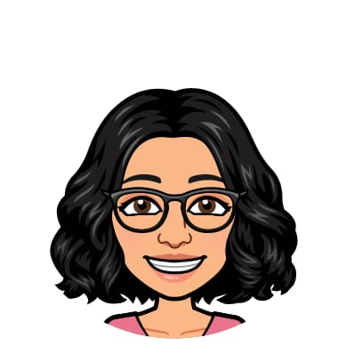

Data Scientist & Developer
Building AI/ML solutions, creating innovative projects, and exploring the universe through data and technology.

About Me
I'm a data scientist with 2 years of experience in software engineering and a master's in Big Data Analytics. I love creating innovative machine learning solutions and have published research in deep learning applications. My passion lies in transforming complex data into actionable insights and building intelligent systems that solve real-world problems.
Skills
Projects
Deep Learning with Wearable Data
Built ensemble ML models for emotion recognition achieving 93% accuracy. Created synthetic data generators with conditional GANs.
View details →Myopia Classification from Fundus Images
Developed a deep learning model with transfer learning, achieving 97.5% validation accuracy for early-stage pathological myopia diagnosis.
Let's Collaborate!
I'm always open to discussing new projects, creative ideas, or opportunities to be part of your vision.
📧 Reach Out